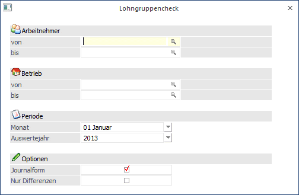
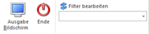
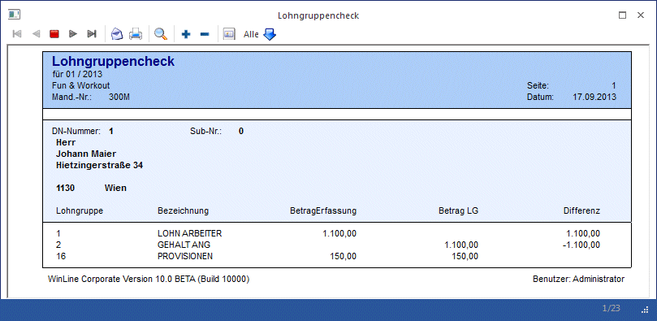

Über den Menüpunkt
1 Auswertungen
1 Check
1 Lohngruppencheck
kann eine Prüfung zwischen erfassten und abgerechneten Lohngruppenwerten erfolgen.

Einschränkungen
Ø Arbeitnehmer von - bis
Hier kann eine Einschränkung der AN vorgenommen werden, für die die Werte geprüft werden sollen. Wie die AN-Nummer eingegeben werden kann, dazu gibt es mehrere Möglichkeiten. Details dazu entnehmen Sie bitte dem Kapitel Aufruf einer AN-Nummer. Wird in den Feldern von - bis ein AN eingetragen, so wird daneben der Name des AN angezeigt, wobei der Name unterstrichen dargestellt wird. Durch einen Klick auf den AN wird standardmäßig der AN-Stamm aufgerufen. Über die rechte Maustaste kann aber individuell eingestellt werden, welche Aktion ausgelöst werden soll. Dabei stehen folgende Optionen zur Verfügung:

ü Arbeitnehmerstamm
Es wird der
AN-Stamm aufgerufen, wobei gleich der Datensatz des angezeigten AN angezeigt
wird.
ü Arbeitnehmerinfo
Es wird die
Arbeitnehmerinfo im Programm WinLine INFO geöffnet.
ü Jahreslohnkonto
Es wird das
Steuerfenster für das Jahreslohnkonto aufgerufen, wo der ausgewählte AN gleich
vorgeschlagen wird. Die Ausgabe muss nur mehr durchgeführt werden.
ü Arbeitnehmer Stammblatt
Es wird
das Steuerfenster für das Arbeitnehmer Stammblatt aufgerufen, wo der ausgewählte
AN gleich vorgeschlagen wird. Die Ausgabe muss nur mehr durchgeführt werden.
ü Lohnerfassung A
Es wird die
Einzelabrechnung aufgerufen, wobei gleich alle Daten des ausgewählten AN
abgerufen werden. Bei diesen Punkt ist darauf zu achten, dass ggf. die
automatischen Lohnarten abgearbeitet werden.
Die zuletzt getätigte Einstellung wird als Standard übernommen, d.h. wenn das nächste Mal nur auf den AN-Namen geklickt wird, dann wird die letzte Aktion automatisch durchgeführt. Diese Einstellung wird pro Benutzer gespeichert.
Ø Betrieb von - bis
In diesen Feldern kann auf die Betriebe eingeschränkt werden, für die die Prüfung durchgeführt werden sollen.
Ø Monat / Auswertejahr
Aus den Auswahllistboxen Monat und Auswertejahr kann die Periode / das Jahr ausgewählt werden, für die die Prüfung durchgeführt werden soll. Dabei werden nur die Perioden/Jahre vorgeschlagen, die auch Abrechnungen enthalten.
Ø Journalform
Wird diese Checkbox aktiviert, dann wird die AN in der Auswertung der Reihe nach angezeigt. Bleibt die Checkbox inaktiv, dann wird für jeden AN eine eigene Seite gedruckt.
Ø Nur Differenzen
Wenn diese Checkbox aktiviert ist, dann werden nur die AN und Erfassungszeilen angezeigt, die eine Differenz aufweisen. Bleibt die Checkbox inaktiv, dann werden alle Erfassungszeilen in der Liste dargestellt.
Zusätzlich kann noch eine Einschränkung über den sogenannten Filter durchgeführt werden.
Im oberen Bereich des Auswertefensters befindet sich der Filter-Button und eine Auswahllistbox.
Buttons

Ø Ausgabe
Aus der Auswahllistbox kann gewählt werden, ob die Ausgabe am Bildschirm oder am Drucker durchgeführt werden soll. Standardmäßig wird die Ausgabe auf Bildschirm vorgeschlagen, die auch durch Drücken der F5-Taste gestartet werden kann. Wurde die Option "Nur Differenzen" aktiviert und es werden keine gefunden, so wird eine entsprechende Meldung angezeigt. Durch Drücken der ESC-Taste wird das Fenster geschlossen.
Ø Filter
Wird der Filter-Button angeklickt, kann ein neuer Filter definiert oder ein bestehender Filter gewählt werden. Dort kann eingestellt werden, nach welchen frei definierbaren Kriterien die Liste eingeschränkt und/oder sortiert werden soll (Details entnehmen Sie dem Kapitel Filter - Assistent.)
Wurden in diesem Fenster bereits Filter angelegt, kann aus der Auswahllistbox ein bestehender Filter gewählt werden. Es werden immer nur die Filter angezeigt, die für das gerade aktive Fenster angelegt wurden.
Inhalt der Auswertung

Neben der Lohngruppennummer und der Lohngruppenbezeichnung wird zuerst der Betrag angezeigt, der aufgrund der Erfassungszeilen vorhanden ist (Spalte BetragErfassung). Daneben wird der tatsächlich abgerechnete Betrag (Spalte Betrag LG) ausgewiesen. In der Spalte Differenz wird eine allfällige Differenz zwischen Erfassung und Abrechnung ausgewiesen.
Wann kommt es Differenzen?
Grundsätzlich gibt es 2 Möglichkeiten, wie es zu Differenzen kommen kann:
ü Die Zuordnung der Lohnarten zu Lohngruppen wird (während der Abrechnung) geändert.
ü Es werden zusätzliche Erfassungszeilen hinzugefügt, die in weiterer Folge nicht abgerechnet werden
In beiden Fällen kommt es zu Differenzen bei diversen Auswertungen, weil einige Auswertungen auf die abgerechneten Werte zugreifen, andere Auswertungen aber auf die Erfassungszeilen.